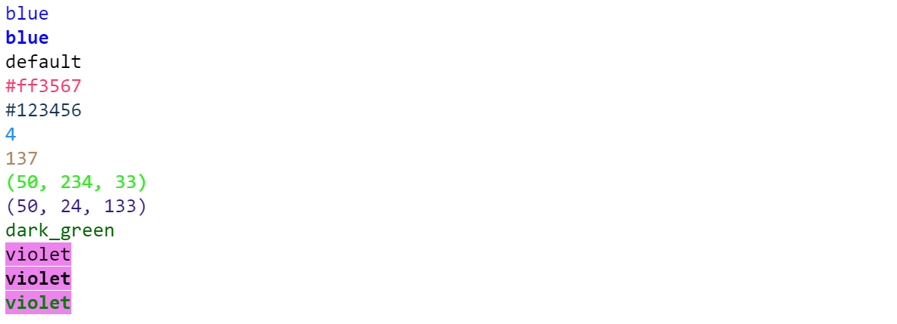
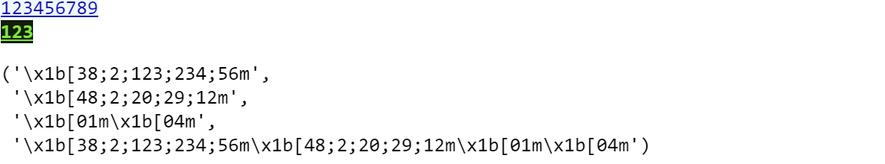
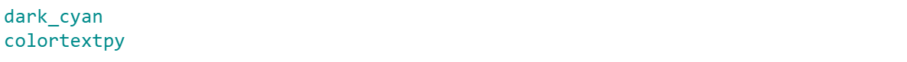
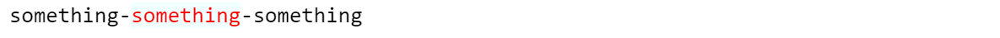
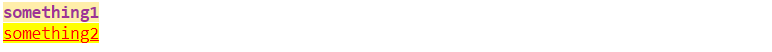
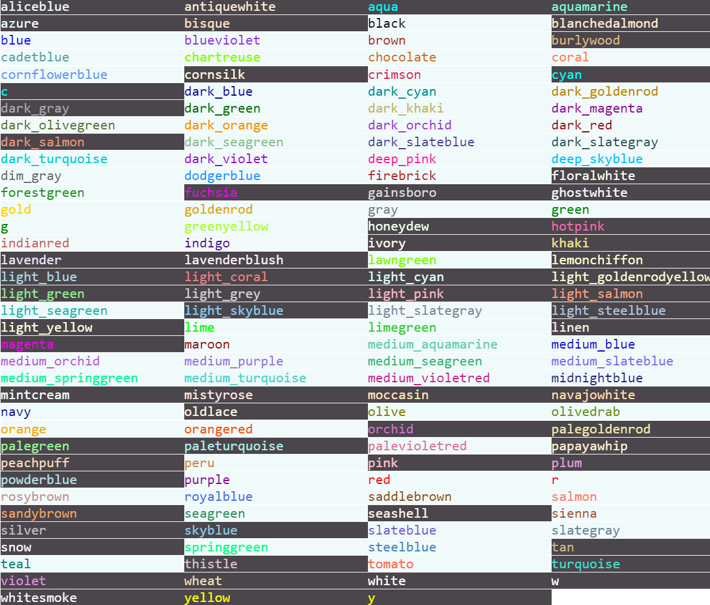

from colortextpy import Printer, colorprint
Printer.blue_print('blue')
Printer.blue_print('blue', bold=True)
colorprint('default')
colorprint('#ff3567', color='#ff3567')
colorprint('#123456', color=Fore['#123456'])
colorprint(4, color=4)
colorprint(137, color=Fore['137'])
colorprint('(50, 234, 33)', color=(50, 234, 33))
colorprint('(50, 24, 133)', color='(50, 24, 133)')
colorprint('dark_green', color=Fore.dark_green)
colorprint('violet', background='violet', bold=False)
colorprint('violet', background='violet', bold=True)
colorprint('violet', color=Fore.green, background='violet', bold=True)colortextpy
Colortextpy is a Python package for adding colors and styles to terminal output, allowing you to create more visually appealing and organized command-line applications. The full
colortextpy documentation is available at https://susuky.github.io/colortextpy/
Install
Tested on python 3.6-3.11, win11, win11 WSL2, Ubuntu
It doesn’t support win32
pip install colortextpyUsage
Color printer

Use Printer.available to see other color printers
Fore, Back, Style
from colortextpy import Fore, Back, Style, AnsiColor, RESET_ALL
Fore, Back, Style(<AnsiColor: 'FORE'>, <AnsiColor: 'BACK'>, <AnsiColor: 'STYLE'>)You could use Style to get style ansi escape code:
print(f'{Style["bold"]+Style.underline}bold + underline{Style.end}')
Style['bold'], Style.underline
Other style see Style.availble, but bold, underline would be the most used
You could use Fore and Back to get the text foreground and background ansi escape code:
Fore['red'], Fore.black, Back.chocolate, Back['hotpink']('\x1b[38;2;255;0;0m',
'\x1b[38;2;0;0;0m',
'\x1b[48;2;210;105;30m',
'\x1b[48;2;255;105;180m')Both Fore and Back could also support 8-bits, hex, rgb color.
Fore[50], Fore['#ffffff'], Fore['123, 45, 67']('\x1b[38;5;50m', '\x1b[38;2;255;255;255m', '\x1b[38;2;123;45;67m')Back['144'], Back['#123456'], Back['(55, 244, 31)']('\x1b[48;5;144m', '\x1b[48;2;18;52;86m', '\x1b[48;2;55;244;31m')Here’s demo of supported 8-bits colors:
Code
for i in range(256):
end = '\n' if (i+1)%8 == 0 else ' '*2
print(f'{i:3}: {Back[i]} {Back.reset}', end=end)
Other available colors are in Fore.availble and Back.available
You could combine Fore, Back, Style to colorize your output:
text = 'something123'
print(Fore[50] + text + Fore.reset)
print(Back['black'] + Fore.aliceblue + Style.underline + text)
colortextpy also provides AnsiColor api to combine Fore, Back and Style together.
AnsiColor
AnsiColor (fore:str=None, back:str=None, style:str=None)
Integrate with Fore, Back, Style.
| Type | Default | Details | |
|---|---|---|---|
| fore | str | None | Foreground color. Could be hex, rgb string or tuple, Fore, 8-bits color |
| back | str | None | Background color, Could be hex, rgb string or tuple, Back, 8-bits color |
| style | str | None | Text style. Seee Style.available. |
ansi = AnsiColor(fore='#0c0caa', back='aliceblue', style='underline')
print(ansi.ansi_fmt + '123456789' + RESET_ALL)
ansi = AnsiColor(fore=Fore['123, 234, 56'], back=(20, 29, 12), style=('bold', 'underline'))
print(ansi.ansi_fmt + '123' + RESET_ALL)
ansi.fore, ansi.back, ansi.style, ansi.ansi_fmt
Without setting any color, AnsiColor would give emtpy string:
AnsiColor().ansi_fmt''ColorStream
Enables context managers to work as decorators to colorize the sys.stdout or sys.stderr
Some usage:
with ColorStream(fore='red'):
print('text')
@ColorStream(fore=Fore.dark_orange)
def foo():
print('FOO')with ColorStream(fore=Fore.dark_violet, autoreset=False):
print('autoreset off, affect next text')
with ColorStream(back=Back.light_green, style=(Style.underline, Style.bold)):
print('add background, underline, bold and autoreset')
with ColorStream(fore='red'):
print('Due to autoreset above, It only have red color')
print('Already leave context, show default color')
@ColorStream(fore=Fore.dark_cyan)
def foo():
print('dark_cyan')
print('colortextpy')
foo()
colorize
you can add color tag. Start with <tag> end with </tag>.
Some usage:
text = 'something'
text_w_tag = f'{text}-<fg red><bg #f0ffff>{text}</fg></bg>-{text}'
print(colorize(text_w_tag))
And some other <tag> complex uasge:
Code
test_strings = ('one', 'two', 'three', 'four', 'five')
test_templates = [
'{0}',
'<blue>{0}</fg>',
'<red>{0}</red>--<bg green>{1}</bg green>',
'{0}--<red>{1}</red>--<fg red><bg green>{2}</bg>--{3}</fg>',
'{0}--<50>{1}</fg>--<fg 155><bg 78>{2}</bg></fg>',
'<bold>{0}--<fg 180, 46, 78>{1}</fg></bold>--<bg 152, 167, 52>{2}</bg>',
'<underline>{0}--<180, 46, 78>{1}</fg>--<bold>{1}--<bg 152, 167, 52>{2}</underline>--{3}</bold>--{4}</bg>',
'<bg #59FFAE>{0}--<#AAAA00>{1}--</bg>{2}</fg>--{3}',
]
for template in test_templates:
print(colorize(template.format(*test_strings)))
colorize also integrates with AnsiColor:
print(colorize('something1', fore=5, back='#ffeeaa', style='bold'))
print(colorize('something2', fore='r', back='y', style='underline'))
Color
Some Constant of color with hex, rgb, bgr format
Color.red.name, Color.red.hex, Color.red.rgb, Color['red']('red', '#ff0000', (255, 0, 0), <Color.red>)You could also pass the hex constant from Color into matplotlib.pyplot:
plt.plot(np.sin(np.linspace(-4, 4, 50)), color=Color.red.hex)
Here are other colors in Color.available :

Friendly Reminder
If you use custom terminal, you might need to change terminal setting to support rgb color.
Take SecureCRT as an example:
Options -> Edit Default Session -> Terminal -> Emulation
Change ColorMode to True Color
Tick the checkbox 'Use color scheme'